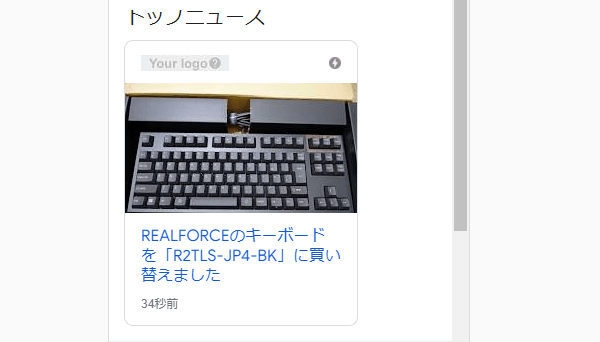

1200pxの画像を用意するしかあるまい
構造化データでArticleを指定しているページがあるのですが、Seach Consoleから「推奨サイズより大きい画像を指定してください」との警告を受けてしまいました。
Google検索セントラルの公式サイトによると、以下の記述がありますが、この「マークアップされた」の意味をどう解釈するのかで対応が変わってくるかもしれません。
- ①記事に直接属するマークアップされた画像のみを指定する必要があります。
- ②画像の幅は 1,200 ピクセル以上にする必要があります。
- ③すべてのページに画像を少なくとも 1 つ含める必要があります（マークアップを含めるかどうかは問わない）。Google は、アスペクト比と解像度に基づいて、検索結果に表示する最適な画像を選択します。
- ④画像の URL は、クロールやインデックス登録に対応できる必要があります。
- ⑤画像はマークアップされたコンテンツを表している必要があります。
- ⑥ファイル形式は Google 画像検索でサポートされている必要があります。
- ⑦適切な画像が選択されるようにするために、アスペクト比が 16x9、4x3、1x1 の高解像度画像（幅と高さをかけて 800,000 ピクセル以上の画像）を複数指定してください。
これが「構造化データでマークアップされた」の意味なのか、「imgのHTMLタグでマークアップされた」の意味なのかは不明ですが、おそらくは後者の意味ではないかと考えています。
■ぼくの解釈
①と⑤
あくまでぼく個人の解釈なので正解かどうかはわかりませんが、これは記事内にて<img>タグでマークアップした画像を使い、その記事のコンテンツ内容を表す画像を使ってねという意味だと解釈しています。記事とは無関係な画像を無料の素材サイトから拾ってきて、テキトーに設定してもだめだよってことではないでしょうか。（詳細不明）
③と⑦
これは大きさの異なる複数の画像のバージョンを指定してくださいという意味だと思いますが、全てのバージョンを記事中の<img>タグでマークアップするかどうかはまでは問わないという意味だと解釈しています。
②と⑦
これはクオリティーの高い画像を用意してねという意味かと思います。
ここで、「構造化データの画像には、記事内の<img>タグでマークアップした画像のみを指定しないと駄目なのか？」という疑問が生じてきますが、①を読めばそうとも感じますし、③を読めばそうでもないとも感じます。
謎は深まるばかりですが、おそらくは記事内容を表す画像を使い、なおかつ検索結果できれいに表示されるように1200px以上の高解像度の画像を使っていれば、それを記事中の<img>タグで設定しているかどうかまでは問わないという意味なのかもしれません。（詳細不明）
個人的には、モバイル端末で表示する画像で1200pxのサイズを使うのは表示が遅くなると思うので、記事中では小さめの画像を指定するようにしました。一方、構造化データで指定する画像については全く同じ画像の元データを使い、1200pxの高解像度のものを設定するようにしました。
ニュース検索などをちらほら見ていますと、600px程度の画像は鮮明ではないものもあるので、やはり1200px程度の高解像度のものが必要かなと感じています。また、文字入れしているものやキャプ画、あるいはコンテンツと無関係な画像は若干チープに感じてしまいます。
当ブログでいいますと、こんな感じだと検索結果に表示されていてもそれほど違和感はないかと思います。

一方、これがぼやけた画像のキャプ画だとチープな印象が出てくるはずです。
なので、AMPテストでプレビューしてみて、検索結果映えする形で1200px以上の高解像度の写真画像を設定しておくことをおすすめします。また、アスペクト比「16x9、4x3、1x1」との指定がありますので、1200pxにした場合は「1200px×675px、1200px×900px、1200px×1200px」あたりのサイズにトリミングして使うか、あるいは撮影機材の方であらかじめアスペクト比を設定しておくとよいかもしれません。